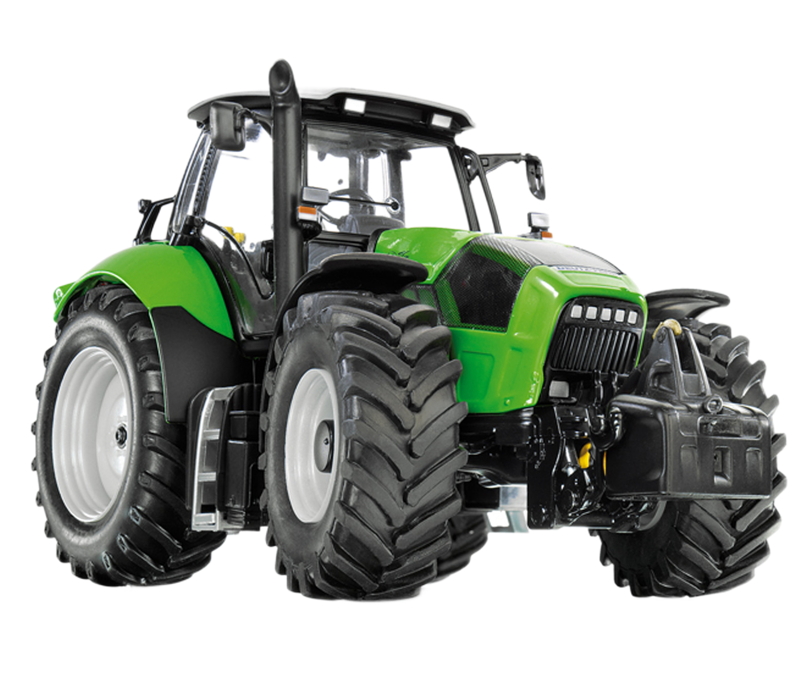

ТРАКТОР DEUTZ-FAHR AGROTRON 165.7

- Длина: 4750 мм
- Ширина: 2220 мм
- Высота: 2900 мм
- Клиренс: 450 мм
- Масса: 6400 кг
- Мощность: 165 л.с.
- Максимальная скорость: 40 км/ч
- Объем топливного бака: 280 л
Трактор Deutz-Fahr Agrotron 165.7 – мощная сельскохозяйственная машина, предназначенная для выполнения различных аграрных задач. Надежный, экономичный и удобный в эксплуатации.
Основные характеристики:
Особенности:
6-цилиндровый двигатель с турбонаддувом. Гидравлическая система с грузоподъемностью до 8600 кг. Просторная кабина с панорамным остеклением и климат-контролем. Надежная трансмиссия с диапазоном скоростей от 0,8 до 40 км/ч. Подходит для обработки почвы, посева, транспортировки и других сельскохозяйственных задач.